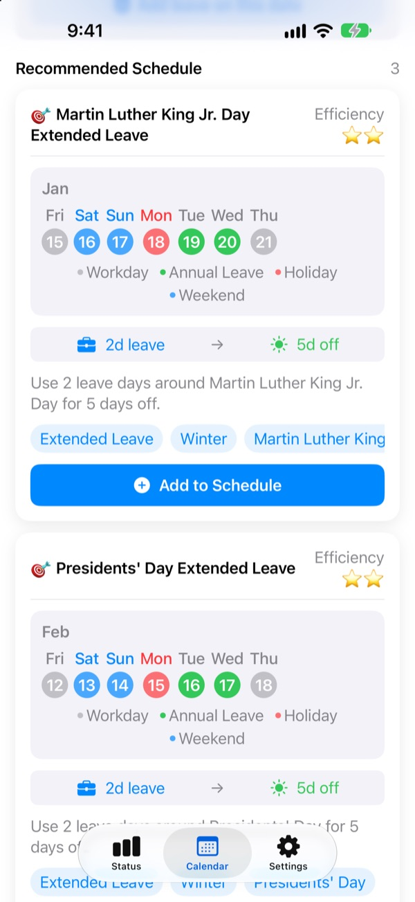
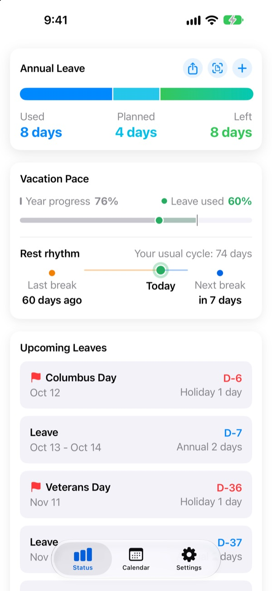
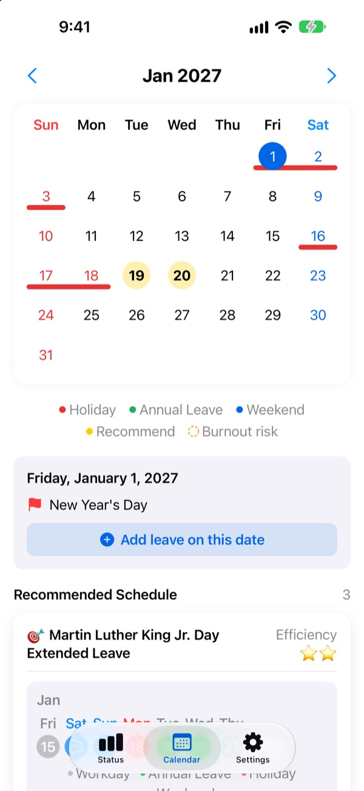
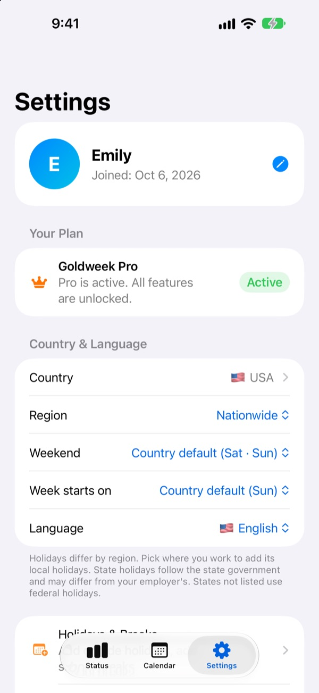

Take one day off.
Get four in a row.
Goldweek pairs public holidays with weekends and shows exactly which days to take off for the longest break. No more flipping through the calendar and counting.
Free to download. Tracking your PTO and seeing suggestions stay free.

How far can your PTO go?
Pick how many days you can take off. You'll see the longest breaks those days unlock around the holidays ahead.
Tired of counting days on the calendar?
Thursday is a holiday, so do you take Friday? Or save the day for next month's long weekend? Flip enough calendar pages and you end up taking whatever day is free, and by December the leftover PTO just disappears. Goldweek does the counting and shows you the days that stretch your PTO the furthest.
Your PTO at a glance
See your total, used and remaining days on one screen. It also shows how far into the year you are next to how much PTO you've used, so you know right away if you're saving too much.
Your remaining days and upcoming time off sit right on your Home Screen in a widget.

Add time off right on the calendar
Holidays, PTO and suggested breaks all show up on the calendar in their own colors. Tap a date to add or edit time off, including half days, quarter days and hours.
You can also import past leave in one go from a photo of your HR screen.

Your country, your schedule
Public holidays for 42 countries, from the US, the UK and Canada to Europe, Asia and Latin America. Where holidays vary by state or region, pick yours. Country not listed? Add your own holidays.
You can also set your weekend days, the first day of the week, and fixed, part-time or shift work.

Three steps to start
- 1
Tell it where you work
On first launch, pick your country and how many PTO days you get a year.
- 2
Pick a suggestion
Find suggested breaks in the Calendar tab and add the ones you like.
- 3
Log your time off
Tap a date, or import past leave from a photo.
How it counts
- Full day
- 1 day off your balance
- Half day
- 0.5 day
- Quarter day
- 0.25 day
- Hours
- Based on the hours you work that day
- Sick leave, official leave, business trips
- Not taken from your balance
- Bonus leave
- Extra leave such as comp days, tracked separately with an expiration date (Pro)
You can change your total annual leave and the month your leave year starts anytime in Settings.
Resting well is free. Hand over the planning with Plus or Pro.
Free
- Full days, half days, quarter days and hours, plus your remaining PTO
- Holidays for 42 countries, plus your own holidays and school breaks
- See every suggestion for this year and add up to 3
- Rest spacing tips, reminders and a Home Screen widget
- Add leave from a photo
- iCloud backup and a shared schedule with family
Plus and Pro
- Plus: Optimal annual planner
- Plus: Unlimited suggestions, plus last year's and next year's
- Plus: Send time off to your calendar app
- Pro: Everything in Plus, bonus leave, yearly limits and carryover by leave type
- Pro: School calendar import and calendar auto-detection
- Pro: Time off together and family anniversaries
Each tier comes as a yearly subscription or a one-time lifetime purchase.
Yearly subscriptions renew automatically unless turned off at least 24 hours before the period ends. Manage them anytime in Settings > Apple Account > Subscriptions.
Questions
My leave balance doesn't look right.
Check the month your leave year starts and your total annual leave in Settings. Half days (0.5) and quarter days (0.25) are deducted automatically, and types that don't count against your balance, such as sick leave, official leave and business trips, don't change it. If it still looks wrong, email us.
My time off doesn't show up on the calendar.
Cancelled time off isn't shown on the calendar. Check the entry's status in Leave Management. Updating to the latest version can also help.
How do I add bonus leave?
Tap + in the Status tab to open Leave Management, then use Bonus Leave at the bottom. Choose a type (such as comp days, reward leave or refresh leave), enter the number of days and, if you like, an expiration date. Bonus leave is tracked separately from your regular PTO.
I paid, but nothing unlocked.
Tap Restore Purchase at the bottom of the Settings tab. Your purchase is restored with the Apple Account you're signed in to on the App Store. If that doesn't work, email us.
Will I lose my data if I delete the app?
Your data is stored on your device, so deleting the app removes it for good. Turn on iCloud Backup to keep a copy you can restore later.
Can I add my own holidays or hide existing ones?
Yes. In Holidays & Breaks in Settings, you can add your own holidays or hide any of the default ones.
Which countries are supported?
Goldweek includes public holidays for 42 countries. Choose your country (and your state or region, where holidays differ) in Settings, and the calendar updates right away. If yours isn't listed, add its holidays yourself or ask us to support it by sending feedback from the app.
Where is my data stored?
What you enter stays on your device or in your own iCloud. We only receive anonymous usage statistics, anonymous crash reports and any feedback you choose to send.
For anything not covered above, feature ideas or bug reports, email leeo@kakao.com. We usually reply within one or two business days.